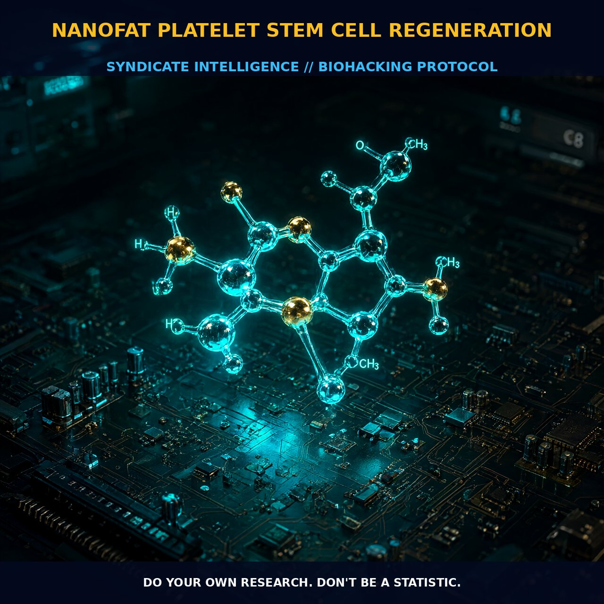

Nanofat Platelet Stem Cell Regeneration: Paracrine Signaling and

1. The Paracrine Engine: From Volume to Biochemical Signaling
Nanofat Platelet Stem Cell Regeneration represents a fundamental paradigm shift in aesthetic medicine, moving beyond the mechanical concept of volumetric augmentation to one of biochemical reconstitution. At the heart of this process is the paracrine hypothesis, which posits that adipose-derived stem cells (ASCs) primarily function as biological catalysts. Rather than differentiating into new structural tissue, these cells exert restorative effects by communicating with neighboring organisms via intercellular signaling. This communication is mediated by exosomes—tiny biomolecular packets often termed 'stem cell juice'—which deliver cargoes of proteins, peptides, and RNA to trigger growth and regulate inflammation.
This mechanism distinguishes nanofat from traditional fat grafts. While conventional grafts rely on the physical presence of adipocytes for volume retention, nanofat processing strips away the majority of these cells via filtration. The result is a highly concentrated stromal vascular fraction rich in platelets and stem cells. This concentrated suspension acts not as filler material, but as an active regenerative engine that targets senescence pathways at the cellular level.
2. Cellular Rejuvenation: Combating Senescence and Oxidative Stress
The clinical impact of this signaling cascade is particularly potent in skin rejuvenation. By reducing the production of free radicals and upregulating collagen synthesis, nanofat promotes a state of heightened cell proliferation. Crucially, it eliminates cells expressing markers of aging, such as SA-beta-gal, effectively reversing aspects of chronological and photo-aging.
The outcome is not merely a temporary plumping of tissue but a deep reconstitution of the dermal architecture. Nanofat restores the elastin fiber network and creates a regenerative microenvironment that actively fights biochemical degradation. This approach circumvents the logistical complexities of labor-intensive lab culture methods, utilizing low-tech filtration to preserve native biological architecture and allowing stem cells to engage immediately with the surrounding microenvironment without viability loss.
3. Biological Leverage: The Abundance of Adipose-Derived Stem Cells
The efficacy of nanofat is underpinned by the physiological advantages of ASCs. Ubiquitous in tissue, these cells possess a multipotent capacity to differentiate into bone, cartilage, muscle, and nerve. Compared to bone marrow aspirate, adipose tissue offers a distinct advantage in sheer volume and accessibility.
Through minimally invasive liposuction, clinicians can harvest stem cell concentrations up to 500-fold greater than those found in bone marrow. This abundant reservoir is often drawn from areas of excess accumulation, such as the love handles. When prepared for superficial subdermal injection, this 'nanofat' leverages the natural affinity of these cells for local environments, promoting vascular morphogenesis and enhancing oxygenation to existing tissues.
4. Tactical Implementation: Depth, Dosage, and Protocol
Successful implementation requires understanding the distinction between millifat, microfat, and nanofat. Nanofat is specifically optimized for superficial subdermal injection to address skin quality and texture, whereas millifat and microfat are positioned deeper to restore volumetric loss in joints or facial hollows.
Dosage and frequency are guided by the biological capacity of the recipient site rather than rigid protocols. Clinical applications extend beyond aesthetics to include chronic wound healing and radiodermatitis management, where reductions in fibrosis and telangiectasias suggest broad utility. While regulations currently limit some exosome-based treatments to topical or local use, the off-label application of filtered adipose grafts offers a viable, lower-risk pathway for self-optimizers seeking endogenous regeneration.
Prostar Life Hack
Optimize for Paracrine Signaling, Not Just Volume: When selecting a provider for nanofat treatment, prioritize those who use low-tech enzymatic filtration over high-energy mechanical processing. High heat or shear forces can damage the delicate exosome payloads and reduce stem cell viability. Ask specifically if the procedure preserves the stromal vascular fraction (SVF) integrity. For maximal anti-aging benefit, combine nanofat injections with periodic fasting post-procedure; this reduces systemic inflammatory noise, allowing the infused exosomes to signal more effectively to local tissue senescence markers without competing signals.
Prostar Life Hack
Optimize for Paracrine Signaling, Not Just Volume: When selecting a provider for nanofat treatment, prioritize those who use low-tech enzymatic filtration over high-energy mechanical processing. High heat or shear forces can damage the delicate exosome payloads and reduce stem cell viability. Ask specifically if the procedure preserves the stromal vascular fraction (SVF) integrity. For maximal anti-aging benefit, combine nanofat injections with periodic fasting post-procedure; this reduces systemic inflammatory noise, allowing the infused exosomes to signal more effectively to local tissue senescence markers without competing signals.
[ AUTHOR: LEAD TECHNICAL RESEARCHER ]